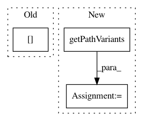

99ab5a7c65dafab05f2e6c12034420ec6430624a,ilastik-shell/applets/dataSelection/dataSelectionGui.py,DataSelectionGui,updateFilePath,#DataSelectionGui#Any#,259
Before Change
newLocationSetting = OpDataSelection.DatasetInfo.Location.ProjectInternal
elif newLocationSelection == LocationOptions.AbsolutePath:
newLocationSetting = OpDataSelection.DatasetInfo.Location.FileSystem
if newTotalPath[0] != "/":
// Convert back to absolute path
cwd = self.mainOperator.WorkingDirectory.value
newTotalPath = os.path.normpath( os.path.join(cwd, newTotalPath) )
After Change
newTotalPath += internalPath
cwd = self.mainOperator.WorkingDirectory.value
absTotalPath, relTotalPath = getPathVariants( newTotalPath, cwd )
// Check the location setting
locationCombo = self.fileInfoTableWidget.cellWidget(index, Column.Location)
newLocationSelection = locationCombo.currentIndex()
In pattern: SUPERPATTERN
Frequency: 4
Non-data size: 3
Instances
Project Name: ilastik/ilastik
Commit Name: 99ab5a7c65dafab05f2e6c12034420ec6430624a
Time: 2012-05-08
Author: bergs@janelia.hhmi.org
File Name: ilastik-shell/applets/dataSelection/dataSelectionGui.py
Class Name: DataSelectionGui
Method Name: updateFilePath
Project Name: ilastik/ilastik
Commit Name: ff48abed0988fc3d0258288aed7985af737d9574
Time: 2012-10-08
Author: bergs@janelia.hhmi.org
File Name: ilastik/applets/dataSelection/dataSelectionGui.py
Class Name: DataSelectionGui
Method Name: addFileNames
Project Name: ilastik/ilastik
Commit Name: 219459f15476426276e24329cdb6f091b5f7cf41
Time: 2019-06-26
Author: tomaz.vieira@embl.de
File Name: ilastik/applets/dataSelection/dataSelectionSerializer.py
Class Name: DataSelectionSerializer
Method Name: importStackAsLocalDataset
Project Name: ilastik/ilastik
Commit Name: aeeb48d960a372bffc86555c53f9d610b4325e20
Time: 2019-06-26
Author: tomaz.vieira@embl.de
File Name: ilastik/applets/dataSelection/dataSelectionSerializer.py
Class Name: DataSelectionSerializer
Method Name: importStackAsLocalDataset